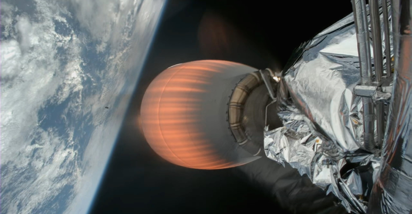

Signal Acquired – Psyche Begins Its Journey of Discovery
A SpaceX Falcon Heavy rocket with the Psyche spacecraft onboard lifts off from Kennedy Space Center’s Launch Complex 39A at 10:19 a.m. EDT Friday, Oct. 13, 2023. Photo credit: NASA Television
A SpaceX Falcon Heavy rocket with the Psyche spacecraft onboard launches at 10:19 EDT Friday, Oct. 13, 2023, from Launch Complex 39A at NASA’s Kennedy Space Center in Florida. Photo credit: NASA/Aubrey Gemignani Psyche mission controllers on Earth have received full acquisition of signal from the spacecraft, and the solar arrays are fully deployed. The spacecraft will be propelled by solar electric propulsion. The five-panel, cross-shaped solar arrays provide around 800 square feet of solar collecting surface and make the spacecraft about the size of a singles tennis court when fully deployed. The solar arrays will produce more than 20 kilowatts of power when the spacecraft is near Earth, but they will generate just over 2 kilowatts of power – just a little more power than a hair dryer – when it reaches the asteroid Psyche, which is far away from the Sun. However, this will be more than enough power to meet the spacecraft’s needs on its journey, including running science instruments, telecommunications, equipment that controls the spacecraft’s temperature, and the spacecraft’s superefficient solar electric propulsion engines. The solar propulsion system’s thrusters use electromagnetic fields to accelerate and push out charged atoms, or ions, of the neutral gas xenon. The expelled ions create the thrust that pushes Psyche through space and emit a blue glow. With no atmospheric drag to hold it back, the spacecraft will accelerate to speeds of up to 124,000 mph (200,000 kph) relative to Earth during its interplanetary journey to the asteroid belt. At the beginning of its roughly six-year journey, the Psyche spacecraft will spend about 100 days in initial checkout to make sure everything is functioning properly, before firing up its thrusters. About 2.5 years after launch, the spacecraft will fly by Mars for a gravity boost. About 5.5 years from now, the cruise period will be ending, and around June 2029, the imagers on the spacecraft will be able to take photos of the asteroid Psyche. In August 2029, the spacecraft will drop into its first of 26 months of planned orbits around the metal-rich asteroid. NASA’s DSOC (Deep Space Optical Communications) demonstration, carried by the Psyche spacecraft, will send and receive test data using an invisible near-infrared laser, which can transmit data at 10 to 100 times the bandwidth of conventional radio wave systems used on spacecraft today. DSOC will demonstrate operations for nearly two years after NASA’s Psyche mission launch while en route to its 2026 Mars flyby. The Psyche mission is led by Arizona State University. NASA’s Jet Propulsion Laboratory is responsible for mission management, operations, and navigation. NASA’s Launch Services Program, based at Kennedy Space Center, is responsible for the insight and approval of the launch vehicle and manages the launch service for the Psyche mission. LSP certified the SpaceX Falcon Heavy rocket for use with the agency’s most complex and highest priority missions in early 2023 at the conclusion of a 2.5-year effort. Psyche is the 14th mission selected as part of NASA’s Discovery Program, managed by the agency’s Marshall Space Flight Center in Huntsville, Alabama. JPL manages DSOC for the Technology Demonstration Missions program within NASA’s Space Technology Mission Directorate and the Space Communications and Navigation program within the Space Operations Mission Directorate. DSOC will take optical communications into deep space for the first time and set the foundation for establishing higher data-rate returns from future robotic and human missions to Mars and beyond.